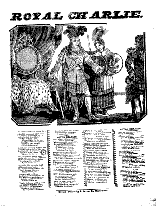
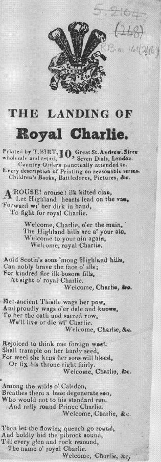
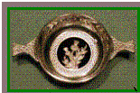

Arouse Ilk kilted Clan!
Que les Clans se mettent en marche!
A broadside ballad
from a Broadside "The Landing of Royal Charlie" printed by T.Birt, "Seven Dials", London, between 1830 & 1850
Also from the Broadside "Royal Charlie" (Belfast, between 1813 & 1850) including three songs:
"Arouse, Ilk kilted Clan!", "Welcome Royal Charlie" and "Who'll be King, but Charlie"
On the illustration the Prince wears the crest of the Prince of Wales
And from Hogg's "Jacobite Relics" 2nd Series N°72, titled "Welcome, Royal Charlie, 2nd Set", page 145, 1821
Tune - Mélodie
"Welcome here again"
Sequenced by Christian Souchon
Alternative tune: "Welcome Royal Charlie" (Hogg's JR2, N°71)
|
To the tune:
Echoing Hogg's remark to this song, the "Jacobite Minstrelsy" (published by R. Griffin, Glasgow, 1828) writes:" this song is modern and evidently adapted to the fine old air [ "He's been long o'coming" ] to which the various versions of "Welcome Royal Charlie" are sung. It is copied from the Scots Magazine for February 1817, and has the signature " F. C. Banks of Clyde." However Hoggs admits in a note to the aforesaid song: "There are many editions of this song, which is popular all over the country, both south and north. This was communicated by Mr Fairley of Tweedsmuir. It is generally sung to the air given ; but the original one is better; I cannot find it , but remember the chorus runs thus:— O ye've been lang o' coming, etc. [cf. "note to the tune" "Welcome Royal Charlie" ]. I found another tune that could qualify as: - it roughly fits the lyrics, - has a similar title, "Welcome here again" , one of its numerous alternative titles, quoted by Andrew Kunz in his "Fiddler's Companion" (cf. Links) being "He is long a coming", - and is first recorded before 1734 in a MS collection, and first printed as "Ye'll ay be welcome back again" in Bremner's "Scots Reels", around 1757. It is also found: - in the Joseph Barnes MS, Carlisle, dating to 1762; - in the William Clarke MS, Lincoln, 1770. - in "Thomson's Complete collection of 200 Favourite Country Dances", volume 3, London, 1773 |
A propos de la mélodie:
Reprenant une remarque de Hogg, la "Jacobite Minstrelsy" (publiée par R.Griffin, Glasgow, 1882) note que: "ce chant est moderne et évidemment adapté au charmant air [ "Il en mit du temps pour venir" ] sur lequel on chante les diverses versions de "Bienvenue, Royal Charlie" . Ce chant est tiré du numéro de février 1817 du "Scots Magazine" et est signé "F. C. Quais de la Clyde" . Toutefois Hoggs reconnaît dans une note au sujet de ce chant: "Il existe de nombreuses versions de ce chant autant connu en Angleterre qu'en Ecosse. Je tiens celle-ci de M. Fairley de Tweedsmuir. On la chante sur l'air dont je donne la musique; mais l'original est meilleur; et je ne peux le retrouver , mais je me souviens que le refrain se chantait ainsi: "O il en mit du temps pour venir, etc. [cf. "note à propos de la mélodie" "Bienvenue, Royal Charlie" ]. J'ai trouvé une autre mélodie qui pourrait faire l'affaire dans la mesure où: - elle suit à peu près les paroles; - a un titre similaire, "Bienvenue à toi qui reviens" , l'un de ses nombreux autres titres - cités par Andrew Kunz dans son "Fiddler's Companion" (cf. liens) - étant "Il en mit du temps pour venir"; - le premier témoignage de son existence est un manuscrit antérieur à 1734 et il est imprimé pour la première fois, sous un titre similaire, dans le "Recueil de reels écossais" de Bremner vers 1757. On le trouve également: - dans le manuscrit Joseph Barnes, Carlisle, datant de 1762; - dans le manuscrit William Clarke, Lincoln, 1770. - dans le "Recueil complet des 200 contredanses les plus populaires" de Thomson, volume 3, Londres, 1773. |

|
THE LANDING OF ROYAL CHARLIE
1. Arouse, arouse, each kilted clan! Let Highland hearts lead on the van, And forward wi' their dirks in han' To fight for Royal Charlie. CHORUS Welcome Charlie o'er the main, Our Highland hills are a'your ain, Welcome to your Isle again; Welcome Royal Charlie! 2. Auld Scotia's sons 'mang Highland hills, Can nobly brave the force of ills For kindred fir ilk bosom fills At sight of Royal Charlie. CHORUS 3. The ancient thistle wags her pow And proudly waves o'er dale and knowe To ear the oath and sacred vow - We'll live and die for Charlie! CHORUS 4. Rejoiced to think nae foreign weed, Shall trample on our kindred seed For weel she kens her sons will bleed Or fix this throne right fairly. CHORUS 5. Amang the wilds o'Caledon Breathe there a base degenerate son, Wha would not to his standard run And rally round Prince Charlie? CHORUS 6. Then let the flowing quaich (*) go round And loudly let the pirbroch sound Till every rock and glen resound The name o' Royal Charlie CHORUS Broadside published about 1830/1850------> It is curious to note that this piece of pro-Jacobite, pro-Scottish literature was published in London, although the content may explain why it reached Scotland! The use of the Prince of Wales' crest, however, as a decorative motif for a pro-Jacobite song, seems a little controversial, and even dangerous. Anti-Jacobite feelings ran quite high until the tour of Scotland by George IV, in 1822.
source: National Library of Scotland
|
  A Quaich |
LE DEBARQUEMENT DE CHARLIE
1. Que les clans se mettent en marche! Qu'en tête les Highlanders passent, Armés de leurs poignards, leurs haches! Combattons pour Charlie! REFRAIN Charlie, l'océan te porte! Ce pays t'appartient en propre, Nous t'ouvrons tout grand ses portes; Salut, Royal Charlie! 2. Souvent les fils de notre Ecosse, Bravèrent de malignes forces; Pleins de la même ardeur féroce Nous t'accueillons, Charlie. REFRAIN 3. Et l'antique chardon s'incline, Quand nos vallées et quand nos cimes Résonnent du serment sublime - Vaincre ou mourir pour Charlie! REFRAIN 4. Pour séparer l'ivraie germaine, A jamais de la bonne graine, Nos fils donneront leur vie même, Pour ton trône, Charlie . REFRAIN 5. Comment notre Calédonie Abriterait-elle un impie, Qui ta noble bannière eût fuie, Loin de toi, O Charlie? REFRAIN 6. Passe donc, coupe débordante (*)! Voix du pibroch, clame, éclatante, Sur chaque roc, sur chaque pente, Ton nom, Royal Charlie! REFRAIN Trad. Chr. Souchon (c) 2004 <-----"Broadside" publiée vers 1830/1850
Il est curieux de noter que ce spécimen de littérature pro-Jacobite et pro-Ecossaise a été publié à Londres, bien que le contenu explique pourquoi il est parvenu en Ecosse! L'utilisation de l'insigne du Prince de Galles, comme motif décoratif pour un chant Jacobite semble un peu subversive, sinon dangereuse. Les sentiments anti-Jacobites étaient encore très vifs jusqu'à ce que George IV entreprenne sa tournée en Ecosse en 1822.
(*) Coupe débordante: "Quaich" : un récipient originaire des Hautes Terres occidentales utilisé pour le porridge et la bière. Le mot provient du gaélique 'cuach', lequel à son tour est le mot latin "caucus" (coupe à libation). Ces coupes ont connu leur heure de gloire du temps des covenants. Le "quaich" sert aujourd'hui à porter des toasts de bienvenue. Il est très "tendance" (cf. illustration ci-contre). |
Map